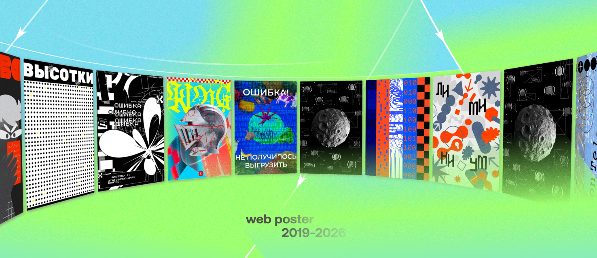
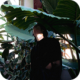

Это дипломный проект Кириллова Максима о формате веб-плаката: одностраничном сайте, который придумывают и верстают сами дизайнеры. Здесь собраны статьи, модули с готовыми решениями и галерея студенческих работ, чтобы разобраться в формате можно было без живого куратора рядом.

Веб-плакат — одностраничный сайт, который сочетает визуальную насыщенность печатного плаката с выразительными возможностями браузера. Анимации, интерактиви адаптивность превращают статичную композицию в живую среду, где зритель может напрямую взаимодействовать с работой. В отличие от лендинга, веб-плакат редко привязан к реальному продукту и почти всегда остаётся авторским художественным высказыванием.
Формат появился в 2019 году внутри Школы дизайна ВШЭ на направлении «Дизайн и программирование». За шесть лет он оброс традицией, но до сих пор существовал скорее как устная практика: знания передавались от куратора к студенту, а описания формата почти нигде не были зафиксированы. Этот сайт собирает то, что раньше жило в разговорах, консультациях и чужих репозиториях долгие годы.
Проект родился из желания зафиксировать и задокументировать формат, который на протяжении долгого времени оставался закрыты и изолированным в Школе Дизайна. Проект предлагает уникальную возможность познакомиться с основами веб-технологий через проектную творческую деятельность. Одновременно с этим, сайт показывает то как могут выглядить альтернативные формы цифровых медиа.

Максим Кириллов
Вольный дизайнер, креативный энтузиаст и студент HSE ART AND DESIGN
Захар День
Руководитель профилей «Дизайн и программирование» и «Дизайн и продвижение цифрового продукта» в Школе дизайна НИУ ВШЭ.